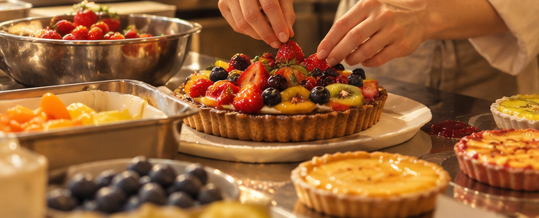
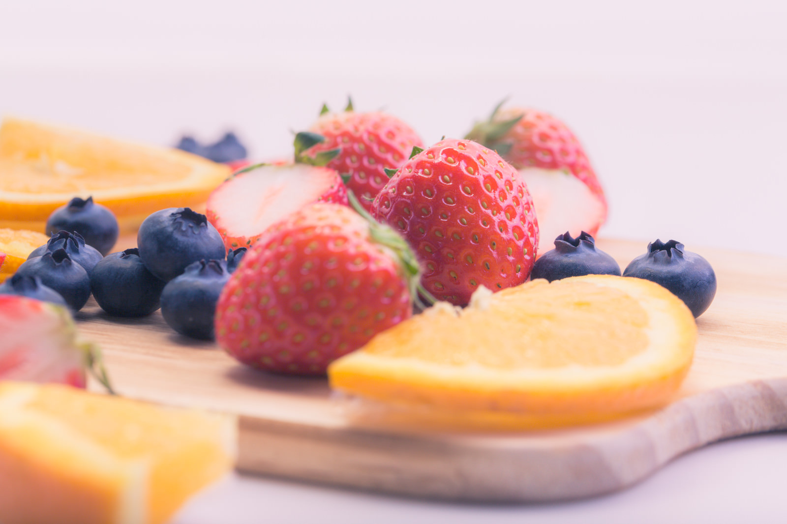
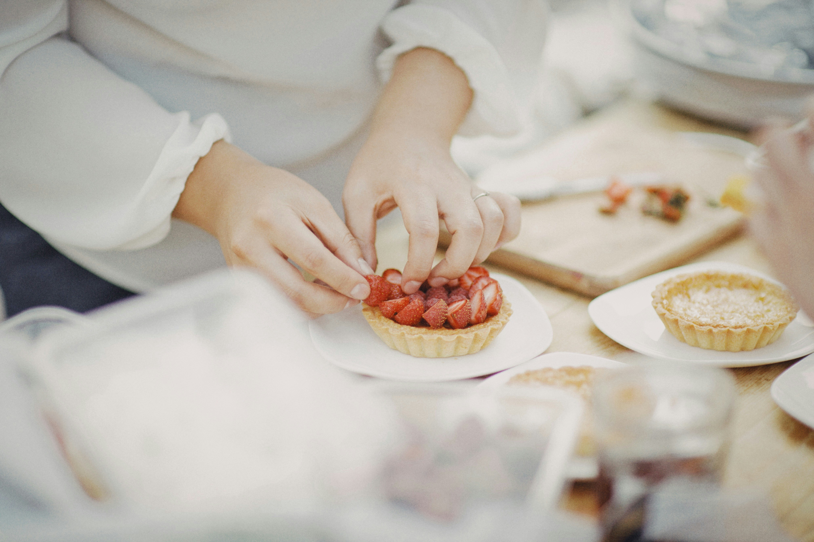

About
Tarte Caféについて
about
Tarte Caféについて
毎日に、ほっとひと息つける甘い時間を。
Tarte Caféでは、旬のフルーツをたっぷり使った
手作りタルトと
香り豊かなコーヒーをご用意しています。
お気に入りのタルトとともに、
心ほどけるひとときをお過ごしください。
concept
私たちの想い
Tarte Caféは、忙しい毎日の中で、
少しだけ立ち止まってゆっくり過ごせる場所を
目指しています。
甘いタルトと香り豊かなコーヒーを楽しみながら、
家族や友人との会話を楽しんだり、
一人でゆっくり過ごしたり。
それぞれのお客様にとって、
心地よい時間を過ごしていただけるカフェで
ありたいと考えています。
commitment
こだわり

その季節に一番おいしい フルーツを選んで使用しています。

タルトは店内で一つひとつ 丁寧に焼き上げています。
タルトのおいしさを引き立てる 香り豊かなコーヒーをご用意しています。
message
お客様へ
おいしいタルトとコーヒーを楽しみながら、
ほっと一息つける時間をお届けしたい。
そんな想いを大切に、
Tarte Caféでは毎日タルトを焼き上げています。
お近くにお越しの際は、
ぜひお気に入りのタルトを見つけにいらしてください。